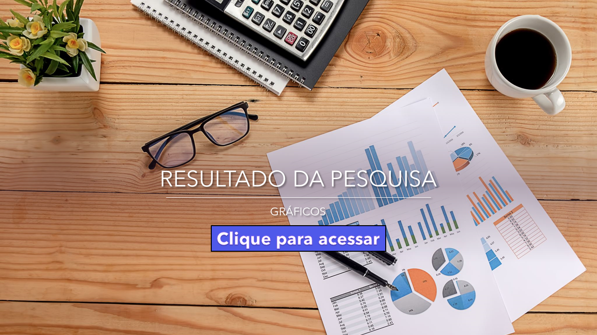

O planejamento financeiro deve ser uma prática adotada por pessoas físicas e jurídicas, privadas e públicas.
Ele consiste no processo de organizar financeiramente com base na situação financeira atual, traçando os objetivos onde se quer chegar,
e o estudo de possíveis caminhos para alcançar esses objetivos.
No geral, as pessoas não criaram o hábito de se planejar financeiramente, seja porque as escolas não ensinaram,
as famílias e muito menos o governo, com isso as pessoas continuam muitas vezes sendo analfabetos financeiros, se endividando
constantemente e não sabendo como sair das dívidas que adquiriram.
Daí a importância de mapear o comportamento financeiro da empresa e de seus funcionários e colaboradores a fim de criar hábitos
financeiros saudáveis, organizar e planejar a fim de tomar decisões financeiras autônomas. O mapeamento é um ponto de partida para a
construção de um plano financeiro que permite acompanhar e mensurar a evolução do trabalho de planejamento financeiro ao longo do tempo
e avaliar se a pessoa está ou não tendo sucesso na execução de seu planejamento financeiro.
Promover o Planejamento Financeiro; buscando organizar, planejar, mapear com o objetivo de criar hábitos saudáveis a fim de conscientizar
cada indivíduo sobre a importância de se planejar uma vida financeira saudável, bem como possibilitar alcanças outros objetivos maiores como
comprar uma casa, um carro ou iniciar o próprio negócio.
Produto final do projeto integrador:
Apresentar uma solução tecnológica com base no diagnóstico (coleta de dados) com uso das ferramentas do Office 365 para a realização de uma
pesquisa sobre os hábitos de consumo, de planejamento financeiro e de investimento das pessoas de um determinado grupo, seguido de análise e
tabulação de dados em planilhas, criação de tabelas no banco de dados e integração com página web via programação em Python para divulgação online
da pesquisa e apresentação da análise dos resultados e demais informações que ajudem as pessoas a planejar, controlar e organizar melhor a vida financeira.
Os participantes da pesquisa sobre comportamento financeiro foram os funcionários das empresas:
- Desenvolve Cidade;
- ETEC
- Oplima
- TV Liberal
- Belém Rio
- Eletromóveis
- DiCasa
- Elshaday Supermercados

O que é planejamento financeiro?

O planejamento financeiro nada mais é do que a organização das finanças pessoais e uma importante ferramenta para poder alcançar metas.
A partir dele, é possível controlar e organizar ganhos e gastos, melhorando a saúde financeira da pessoa para, então, ela traçar objetivos e montar planos de ação.
Trata-se de um conjunto de estratégias que vão ajudar a pessoa a utilizar melhor o seu dinheiro, seja pela definição de metas e objetivos financeiros até a parte mais prática de organizar as finanças e o orçamento para executar os objetivos. Ele acaba funcionando como um mapa que vai guiar a pessoa para traçar e conquistar metas e sonhos que envolvem dinheiro.
A construção de um bom plano financeiro exige que você olhe para seus números reais, mesmo que não sejam agradáveis. Para mais detalhes de quais informações coletar, acompanhe o bloco abaixo.
O planejamento financeiro pode se estruturar em 6 pilares: Gestão financeira, Gestão de ativos e investimentos, Planejamento da aposentadoria, Gestão de Riscos e Seguros, Aspectos tributários e Sucessão patrimonial.
Fazer um planejamento financeiro pessoal significa administrar de maneira eficiente os gastos, saldar dívidas, fazer uma poupança periodicamente e, por fim, investir de maneira correta os recursos poupados.
saiba mais
O que é investimento financeiro?

Investimento financeiro pode ser classificado como operações de compra e venda de ativos. O objetivo é repor o valor de compra, além de obter lucro na operação.
Poderíamos dizer que o objetivo de um investimento financeiro é fazer que “o dinheiro faça mais dinheiro”.
Temos basicamente duas formas de investir: aplicando em renda fixa ou em renda variável.
Em termos simples, as pessoas que fazem investimentos estão, na maioria das vezes, “emprestando” o seu dinheiro para empresas ou mesmo para o poder público, que pagam o montante de volta acrescidos de juros. Para isso, é fundamental avaliar uma série de fatores, como a solidez da instituição, o tipo de aplicação, as regras do setor, e assim por diante.
Portanto, realizar investimentos financeiros é aplicar o seu dinheiro em ativos (ações, títulos, letras de crédito, moedas) que estão lastreados por bens, créditos ou outro fator que confere valor à tal ativo.
Quais são as alternativas disponíveis no mercado?
Após saber o que é o investimento de forma geral, você precisa conhecer as alternativas disponíveis no mercado. Como existem muitas modalidades e tipos de investimento, é importante começar pelas principais características das duas classes: renda fixa e renda variável.
Renda fixa: É uma classe de investimentos em que a principal característica de suas alternativas é a previsibilidade de rendimentos. Ou seja, ao investir em um título de renda fixa, o investidor já saberá como se dará os seus ganhos.
Renda variável: Diferente da classe anterior, a renda variável não garante a previsibilidade com os investimentos. Dessa forma, o investidor não sabe como se darão seus ganhos. Na verdade, os ativos podem, inclusive, sofrer desvalorização e trazer perdas financeiras.
Ações: As ações, que representam uma fração ideal do capital social de uma empresa de capital aberto listada na bolsa de valores.
Fundo de investimento: são formas de investir coletivamente por meio da compra de cotas. O fundo é lançado no mercado com uma estratégia e tipo definido.
Saiba mais
O que é consumo financeiro?

o Consumo está na criação de novos hábitos e comportamentos que façam com que os consumidores aprendam a lidar com suas finanças, para que tenham consciência de manter o planejamento, de forma que não gastem além do que o orçamento permite.
Consumo desnecessário é um estado da mente. Por isso, deve fazer parte do seu dia a dia nos mínimos detalhes. Lidar com questões financeiras de uma forma positiva fará também com que sua relação com o dinheiro melhore e que o consumo seja feito de uma forma mais consciente. Comece a anotar quais são seus gastos para saber o que você está gastando que não deveria.
Não existe forma de guardar dinheiro sem parar de gastar um pouco. Preste atenção em quais são as compras que você tem feito por impulso e sem necessidade. E, principalmente, nos seus gastos fixos. Nesse caso, um controle financeiro também pode te ajudar muito para entender como gastar na medida certa. Comece a anotar quais são seus gastos para saber o que você está gastando que não deveria. Existem vários aplicativos que também podem te ajudar com isso.
Com todas as despesas listadas, fica muito fácil identificar o que é realmente necessário pagar e o que é supérfluo.
A prioridade deve ser para aqueles gastos sem os quais você não pode viver. Normalmente, são despesas com moradia, saúde, alimentação, transporte e educação.
Ainda observando a sua lista de despesas, você perceberá outros gastos além dos citados acima. Geralmente, são esses os gastos desnecessários, aqueles que você pode viver sem, mas que trazem alguma satisfação pessoal.
Um exemplo comum é a TV por assinatura. Se você estiver pagando a assinatura de uma TV com centenas de canais, mas só assiste a dois ou três, pode estar desperdiçando dinheiro. Ou, então, aquele dia da semana em que toda a família se reúne para comer pizza. Em vez de fazer isso toda semana, você pode reduzir para uma ou duas vezes ao mês, assim tendo um controle maior com seus gastos
Saiba mais